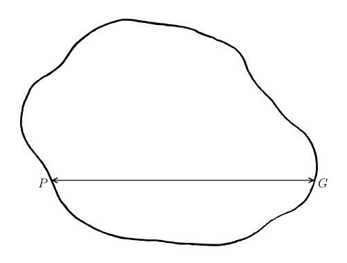

Chapter 3: Lecture III the General Theory of Relativity¶
3.1 Lecture III the General Theory of Relativity¶
ALL of the previous considerations have been based upon the assumption that all inertial systems are equivalent for the description of physical phenomena, but that they are preferred, for the formulation of the laws of nature, to spaces of reference in a different state of motion. We can think of no cause for this preference for definite states of motion to all others, according to our previous considerations, either in the perceptible bodies or in the concept of motion; on the contrary, it must be regarded as an independent property of the space-time continuum. The principle of inertia, in particular, seems to compel us to ascribe physically objective properties to the space-time continuum. Just as it was necessary from the Newtonian standpoint to make both the statements, tempus est absolutum, spatium est absolutum, so from the standpoint of the special theory of relativity we must say, continuum spatii et temporis est absolutum. In this latter statement absolutum means not only "physically real," but also "independent in its physical properties, having a physical effect, but not itself influenced by physical conditions."
As long as the principle of inertia is regarded as the keystone of physics, this standpoint is certainly the only one which is justified. But there are two serious criticisms of the ordinary conception. In the first place, it is contrary to the mode of thinking in science to conceive of a thing (the space-time continuum) which acts itself, but which cannot be acted upon. This is the reason why E. Mach was led to make the attempt to eliminate space as an active cause in the system of mechanics. According to him, a material particle does not move in unaccelerated motion relatively to space, but relatively to the centre of all the other masses in the universe; in this way the series of causes of mechanical phenomena was closed, in contrast to the mechanics of Newton and Galileo. In order to develop this idea within the limits of the modern theory of action through a medium, the properties of the space-time continuum which determine inertia must be regarded as field properties of space, analogous to the electromagnetic field. The concepts of classical mechanics afford no way of expressing this. For this reason Mach's attempt at a solution failed for the time being. We shall come back to this point of view later. In the second place, classical mechanics indicates a limitation which directly demands an extension of the principle of relativity to spaces of reference which are not in uniform motion relatively to each other. The ratio of the masses of two bodies is defined in mechanics in two ways which differ from each other fundamentally; in the first place, as the reciprocal ratio of the accelerations which the same motional force imparts to them (inert mass), and in the second place, as the ratio of the forces which act upon them in the same gravitational field (gravitational mass). The equality of these two masses, so differently defined, is a fact which is confirmed by experiments of very high accuracy (experiments of Eötvös), and classical mechanics offers no explanation for this equality. It is, however, clear that science is fully justified in assigning such a numerical equality only after this numerical equality is reduced to an equality of the real nature of the two concepts.
That this object may actually be attained by an extension of the principle of relativity, follows from the following consideration. A little reflection will show that the theorem of the equality of the inert and the gravitational mass is equivalent to the theorem that the acceleration imparted to a body by a gravitational field is independent of the nature of the body. For Newton's equation of motion in a gravitational field, written out in full, is It is only when there is numerical equality between the inert and gravitational mass that the acceleration is independent of the nature of the body. Let now  be an inertial system. Masses which are sufficiently far from each other and from other bodies are then, with respect to , free from acceleration. We shall also refer these masses to a system of co-ordinates ' uniformly accelerated with respect to . Relatively to ' all the masses have equal and parallel accelerations; with respect to ' they behave just as if a gravitational field were present and ' were unaccelerated. Overlooking for the present the question as to the "cause" of such a gravitational field, which will occupy us later, there is nothing to prevent our conceiving this gravitational field as real, that is, the conception that ' is "at rest" and a gravitational field is present we may consider as equivalent to the conception that only is an "allowable" system of co-ordinates and no gravitational field is present. The assumption of the complete physical equivalence of the systems of co-ordinates, and ', we call the "principle of equivalence;" this principle is evidently intimately connected with the theorem of the equality between the inert and the gravitational mass, and signifies an extension of the principle of relativity to co-ordinate systems which are in non-uniform motion relatively to each other. In fact, through this conception we arrive at the unity of the nature of inertia and gravitation. For according to our way of looking at it, the same masses may appear to be either under the action of inertia alone (with respect to ) or under the combined action of inertia and gravitation (with respect to '). The possibility of explaining the numerical equality of inertia and gravitation by the unity of their nature gives to the general theory of relativity, according to my conviction, such a superiority over the conceptions of classical mechanics, that all the difficulties encountered in development must be considered as small in comparison.
be an inertial system. Masses which are sufficiently far from each other and from other bodies are then, with respect to , free from acceleration. We shall also refer these masses to a system of co-ordinates ' uniformly accelerated with respect to . Relatively to ' all the masses have equal and parallel accelerations; with respect to ' they behave just as if a gravitational field were present and ' were unaccelerated. Overlooking for the present the question as to the "cause" of such a gravitational field, which will occupy us later, there is nothing to prevent our conceiving this gravitational field as real, that is, the conception that ' is "at rest" and a gravitational field is present we may consider as equivalent to the conception that only is an "allowable" system of co-ordinates and no gravitational field is present. The assumption of the complete physical equivalence of the systems of co-ordinates, and ', we call the "principle of equivalence;" this principle is evidently intimately connected with the theorem of the equality between the inert and the gravitational mass, and signifies an extension of the principle of relativity to co-ordinate systems which are in non-uniform motion relatively to each other. In fact, through this conception we arrive at the unity of the nature of inertia and gravitation. For according to our way of looking at it, the same masses may appear to be either under the action of inertia alone (with respect to ) or under the combined action of inertia and gravitation (with respect to '). The possibility of explaining the numerical equality of inertia and gravitation by the unity of their nature gives to the general theory of relativity, according to my conviction, such a superiority over the conceptions of classical mechanics, that all the difficulties encountered in development must be considered as small in comparison.
What justifies us in dispensing with the preference for inertial systems over all other co-ordinate systems, a preference that seems so securely established by experiment based upon the principle of inertia? The weakness of the principle of inertia lies in this, that it involves an argument in a circle: a mass moves without acceleration if it is sufficiently far from other bodies; we know that it is sufficiently far from other bodies only by the fact that it moves without acceleration. Are there, in general, any inertial systems for very extended portions of the space-time continuum, or, indeed, for the whole universe? We may look upon the principle of inertia as established, to a high degree of approximation, for the space of our planetary system, provided that we neglect the perturbations due to the sun and planets. Stated more exactly, there are finite regions, where, with respect to a suitably chosen space of reference, material particles move freely without acceleration, and in which the laws of the special theory of relativity, which have been developed above, hold with remarkable accuracy. Such regions we shall call "Galilean regions." We shall proceed from the consideration of such regions as a special case of known properties.
The principle of equivalence demands that in dealing with Galilean regions we may equally well make use of non-inertial systems, that is, such co-ordinate systems as, relatively to inertial systems, are not free from acceleration and rotation. If, further, we are going to do away completely with the difficult question as to the objective reason for the preference of certain systems of co-ordinates, then we must allow the use of arbitrarily moving systems of co-ordinates. As soon as we make this attempt seriously we come into conflict with that physical interpretation of space and time to which we were led by the special theory of relativity. For let ' be a system of co-ordinates whose '-axis coincides with the -axis of , and which rotates about the latter axis with constant angular velocity. Are the configurations of rigid bodies, at rest relatively to ', in accordance with the laws of Euclidean geometry? Since ' is not an inertial system, we do not know directly the laws of configuration of rigid bodies with respect to ', nor the laws of nature, in general. But we do know these laws with respect to the inertial system , and we can therefore estimate them with respect to '. Imagine a circle drawn about the origin in the plane of ' and a diameter of this circle. Imagine, further, that we have given a large number of rigid rods, all equal to each other. We suppose these laid in series along the periphery and the diameter of the circle, at rest relatively to '. If  is the number of these rods along the periphery,
is the number of these rods along the periphery,  the number along the diameter, then, if ' does not rotate relatively to , we shall have But if ' rotates we get a different result. Suppose that at a definite time
the number along the diameter, then, if ' does not rotate relatively to , we shall have But if ' rotates we get a different result. Suppose that at a definite time  of we determine the ends of all the rods. With respect to all the rods upon the periphery experience the Lorentz contraction, but the rods upon the diameter do not experience this contraction (along their lengths!).1 It therefore follows that
of we determine the ends of all the rods. With respect to all the rods upon the periphery experience the Lorentz contraction, but the rods upon the diameter do not experience this contraction (along their lengths!).1 It therefore follows that
It therefore follows that the laws of configuration of rigid bodies with respect to ' do not agree with the laws of configuration of rigid bodies that are in accordance with Euclidean geometry. If, further, we place two similar clocks (rotating with '), one upon the periphery, and the other at the centre of the circle, then, judged from , the clock on the periphery will go slower than the clock at the centre. The same thing must take place, judged from ', if we define time with respect to ' in a not wholly unnatural way, that is, in such a way that the laws with respect to ' depend explicitly upon the time. Space and time, therefore, cannot be defined with respect to ' as they were in the special theory of relativity with respect to inertial systems. But, according to the principle of equivalence, ' is also to be considered as a system at rest, with respect to which there is a gravitational field (field of centrifugal force, and force of Coriolis). We therefore arrive at the result: the gravitational field influences and even determines the metrical laws of the space-time continuum. If the laws of configuration of ideal rigid bodies are to be expressed geometrically, then in the presence of a gravitational field the geometry is not Euclidean.
The case that we have been considering is analogous to that which is presented in the two-dimensional treatment of surfaces. It is impossible in the latter case also, to introduce co-ordinates on a surface (e.g. the surface of an ellipsoid) which have a simple metrical significance, while on a plane the Cartesian co-ordinates,  ,
,  , signify directly lengths measured by a unit measuring rod. Gauss overcame this difficulty, in his theory of surfaces, by introducing curvilinear co-ordinates which, apart from satisfying conditions of continuity, were wholly arbitrary, and afterwards these co-ordinates were related to the metrical properties of the surface. In an analogous way we shall introduce in the general theory of relativity arbitrary co-ordinates, , ,
, signify directly lengths measured by a unit measuring rod. Gauss overcame this difficulty, in his theory of surfaces, by introducing curvilinear co-ordinates which, apart from satisfying conditions of continuity, were wholly arbitrary, and afterwards these co-ordinates were related to the metrical properties of the surface. In an analogous way we shall introduce in the general theory of relativity arbitrary co-ordinates, , ,  ,
,  , which shall number uniquely the space-time points, so that neighbouring events are associated with neighbouring values of the co-ordinates; otherwise, the choice of co-ordinates is arbitrary. We shall be true to the principle of relativity in its broadest sense if we give such a form to the laws that they are valid in every such four-dimensional system of co-ordinates, that is, if the equations expressing the laws are co-variant with respect to arbitrary transformations.
, which shall number uniquely the space-time points, so that neighbouring events are associated with neighbouring values of the co-ordinates; otherwise, the choice of co-ordinates is arbitrary. We shall be true to the principle of relativity in its broadest sense if we give such a form to the laws that they are valid in every such four-dimensional system of co-ordinates, that is, if the equations expressing the laws are co-variant with respect to arbitrary transformations.
The most important point of contact between Gauss's theory of surfaces and the general theory of relativity lies in the metrical properties upon which the concepts of both theories, in the main, are based. In the case of the theory of surfaces, Gauss's argument is as follows. Plane geometry may be based upon the concept of the distance , between two indefinitely near points. The concept of this distance is physically significant because the distance can be measured directly by means of a rigid measuring rod. By a suitable choice of Cartesian co-ordinates this distance may be expressed by the formula . We may base upon this quantity the concepts of the straight line as the geodesic (), the interval, the circle, and the angle, upon which the Euclidean plane geometry is built. A geometry may be developed upon another continuously curved surface, if we observe that an infinitesimally small portion of the surface may be regarded as plane, to within relatively infinitesimal quantities. There are Cartesian co-ordinates, , , upon such a small portion of the surface, and the distance between two points, measured by a measuring rod, is given by If we introduce arbitrary curvilinear co-ordinates, , , on the surface, then , , may be expressed linearly in terms of , . Then everywhere upon the surface we have where , , are determined by the nature of the surface and the choice of co-ordinates; if these quantities are known, then it is also known how networks of rigid rods may be laid upon the surface. In other words, the geometry of surfaces may be based upon this expression for exactly as plane geometry is based upon the corresponding expression.
There are analogous relations in the four-dimensional space-time continuum of physics. In the immediate neighbourhood of an observer, falling freely in a gravitational field, there exists no gravitational field. We can therefore always regard an infinitesimally small region of the space-time continuum as Galilean. For such an infinitely small region there will be an inertial system (with the space co-ordinates, , , , and the time co-ordinate ) relatively to which we are to regard the laws of the special theory of relativity as valid. The quantity which is directly measurable by our unit measuring rods and clocks, or its negative, is therefore a uniquely determinate invariant for two neighbouring events (points in the four-dimensional continuum), provided that we use measuring rods that are equal to each other when brought together and superimposed, and clocks whose rates are the same when they are brought together. In this the physical assumption is essential that the relative lengths of two measuring rods and the relative rates of two clocks are independent, in principle, of their previous history. But this assumption is certainly warranted by experience; if it did not hold there could be no sharp spectral lines; for the single atoms of the same element certainly do not have the same history, and it would be absurd to suppose any relative difference in the structure of the single atoms due to their previous history if the mass and frequencies of the single atoms of the same element were always the same.
Space-time regions of finite extent are, in general, not Galilean, so that a gravitational field cannot be done away with by any choice of co-ordinates in a finite region. There is, therefore, no choice of co-ordinates for which the metrical relations of the special theory of relativity hold in a finite region. But the invariant always exists for two neighbouring points (events) of the continuum. This invariant may be expressed in arbitrary co-ordinates. If one observes that the local may be expressed linearly in terms of the co-ordinate differentials  , may be expressed in the form
, may be expressed in the form
The functions describe, with respect to the arbitrarily chosen system of co-ordinates, the metrical relations of the space-time continuum and also the gravitational field. As in the special theory of relativity, we have to discriminate between time-like and space-like line elements in the four-dimensional continuum; owing to the change of sign introduced, time-like line elements have a real, space-like line elements an imaginary . The time-like can be measured directly by a suitably chosen clock.
According to what has been said, it is evident that the formulation of the general theory of relativity assumes a generalization of the theory of invariants and the theory of tensors; the question is raised as to the form of the equations which are co-variant with respect to arbitrary point transformations. The generalized calculus of tensors was developed by mathematicians long before the theory of relativity. Riemann first extended Gauss's train of thought to continua of any number of dimensions; with prophetic vision he saw the physical meaning of this generalization of Euclid's geometry. Then followed the development of the theory in the form of the calculus of tensors, particularly by Ricci and Levi-Civita. This is the place for a brief presentation of the most important mathematical concepts and operations of this calculus of tensors.
We designate four quantities, which are defined as functions of the  with respect to every system of co-ordinates, as components, , of a contra-variant vector, if they transform in a change of co-ordinates as the co-ordinate differentials . We therefore have Besides these contra-variant vectors, there are also co-variant vectors. If are the components of a co-variant vector, these vectors are transformed according to the rule The definition of a co-variant vector is chosen in such a way that a co-variant vector and a contra-variant vector together form a scalar according to the scheme, Accordingly, In particular, the derivatives of a scalar
with respect to every system of co-ordinates, as components, , of a contra-variant vector, if they transform in a change of co-ordinates as the co-ordinate differentials . We therefore have Besides these contra-variant vectors, there are also co-variant vectors. If are the components of a co-variant vector, these vectors are transformed according to the rule The definition of a co-variant vector is chosen in such a way that a co-variant vector and a contra-variant vector together form a scalar according to the scheme, Accordingly, In particular, the derivatives of a scalar  , are components of a co-variant vector, which, with the co-ordinate differentials, form the scalar ; we see from this example how natural is the definition of the co-variant vectors.
, are components of a co-variant vector, which, with the co-ordinate differentials, form the scalar ; we see from this example how natural is the definition of the co-variant vectors.
There are here, also, tensors of any rank, which may have co-variant or contra-variant character with respect to each index; as with vectors, the character is designated by the position of the index. For example, denotes a tensor of the second rank, which is co-variant with respect to the index  , and contra-variant with respect to the index
, and contra-variant with respect to the index  . The tensor character indicates that the equation of transformation is
. The tensor character indicates that the equation of transformation is
Tensors may be formed by the addition and subtraction of tensors of equal rank and like character, as in the theory of invariants of orthogonal linear substitutions, for example, The proof of the tensor character of depends upon (58).
Tensors may be formed by multiplication, keeping the character of the indices, just as in the theory of invariants of linear orthogonal transformations, for example, The proof follows directly from the rule of transformation.
Tensors may be formed by contraction with respect to two indices of different character, for example, The tensor character of determines the tensor character of . Proof—
The properties of symmetry and skew-symmetry of a tensor with respect to two indices of like character have the same significance as in the theory of invariants.
With this, everything essential has been said with regard to the algebraic properties of tensors.
The Fundamental Tensor. It follows from the invariance of for an arbitrary choice of the , in connexion with the condition of symmetry consistent with (55), that the are components of a symmetrical co-variant tensor (Fundamental Tensor). Let us form the determinant, , of the , and also the minors, divided by , corresponding to the single . These minors, divided by , will be denoted by , and their co-variant character is not yet known. Then we have
If we form the infinitely small quantities (co-variant vectors) multiply by and sum over the , we obtain, by the use of (62), Since the ratios of the , are arbitrary, and the as well as the are components of vectors, it follows that the are the components of a contra-variant tensor2 (contra-variant fundamental tensor). The tensor character of (mixed fundamental tensor) accordingly follows, by (62). By means of the fundamental tensor, instead of tensors with co-variant index character, we can introduce tensors with contra-variant index character, and conversely. For example,
Volume Invariants. The volume element is not an invariant. For by Jacobi's theorem, But we can complement so that it becomes an invariant. If we form the determinant of the quantities we obtain, by a double application of the theorem of multiplication of determinants, We therefore get the invariant,
Formation of Tensors by Differentiation. Although the algebraic operations of tensor formation have proved to be as simple as in the special case of invariance with respect to linear orthogonal transformations, nevertheless in the general case, the invariant differential operations are, unfortunately, considerably more complicated. The reason for this is as follows. If is a contra-variant vector, the coefficients of its transformation, , are independent of position only if the transformation is a linear one. For then the vector components, , at a neighbouring point transform in the same way as the , from which follows the vector character of the vector differentials, and the tensor character of . But if the are variable this is no longer true.
That there are, nevertheless, in the general case, invariant differential operations for tensors, is recognized most satisfactorily in the following way, introduced by Levi-Civita and Weyl. Let () be a contra-variant vector whose components are given with respect to the co-ordinate system of the . Let  and
and  be two infinitesimally near points of the continuum. For the infinitesimal region surrounding the point , there is, according to our way of considering the matter, a co-ordinate system of the
be two infinitesimally near points of the continuum. For the infinitesimal region surrounding the point , there is, according to our way of considering the matter, a co-ordinate system of the  (with imaginary -co-ordinate) for which the continuum is Euclidean. Let be the co-ordinates of the vector at the point . Imagine a vector drawn at the point , using the local system of the , with the same co-ordinates (parallel vector through ), then this parallel vector is uniquely determined by the vector at and the displacement. We designate this operation, whose uniqueness will appear in the sequel, the parallel displacement of the vector from to the infinitesimally near point . If we form the vector difference of the vector () at the point and the vector obtained by parallel displacement from to , we get a vector which may be regarded as the differential of the vector () for the given displacement .
(with imaginary -co-ordinate) for which the continuum is Euclidean. Let be the co-ordinates of the vector at the point . Imagine a vector drawn at the point , using the local system of the , with the same co-ordinates (parallel vector through ), then this parallel vector is uniquely determined by the vector at and the displacement. We designate this operation, whose uniqueness will appear in the sequel, the parallel displacement of the vector from to the infinitesimally near point . If we form the vector difference of the vector () at the point and the vector obtained by parallel displacement from to , we get a vector which may be regarded as the differential of the vector () for the given displacement .
This vector displacement can naturally also be considered with respect to the co-ordinate system of the . If are the co-ordinates of the vector at , the co-ordinates of the vector displaced to along the interval (), then the do not vanish in this case. We know of these quantities, which do not have a vector character, that they must depend linearly and homogeneously upon the and the . We therefore put
In addition, we can state that the must be symmetrical with respect to the indices  and
and  . For we can assume from a representation by the aid of a Euclidean system of local co-ordinates that the same parallelogram will be described by the displacement of an element along a second element as by a displacement of along . We must therefore have The statement made above follows from this, after interchanging the indices of summation, and , on the right-hand side.
. For we can assume from a representation by the aid of a Euclidean system of local co-ordinates that the same parallelogram will be described by the displacement of an element along a second element as by a displacement of along . We must therefore have The statement made above follows from this, after interchanging the indices of summation, and , on the right-hand side.
Since the quantities determine all the metrical properties of the continuum, they must also determine the . If we consider the invariant of the vector that is, the square of its magnitude, which is an invariant, this cannot change in a parallel displacement. We therefore have or, by (67),
Owing to the symmetry of the expression in the brackets with respect to the indices and , this equation can be valid for an arbitrary choice of the vectors () and only when the expression in the brackets vanishes for all combinations of the indices. By a cyclic interchange of the indices , , , we obtain thus altogether three equations, from which we obtain, on taking into account the symmetrical property of the , in which, following Christoffel, the abbreviation has been used,
If we multiply (68) by and sum over the , we obtain in which is the Christoffel symbol of the second kind. Thus the quantities are deduced from the . Equations (67) and (70) are the foundation for the following discussion.
Co-variant Differentiation of Tensors. If () is the vector resulting from an infinitesimal parallel displacement from to , and () the vector at the point , then the difference of these two, is also a vector. Since this is the case for an arbitrary choice of the , it follows that is a tensor, which we designate as the co-variant derivative of the tensor of the first rank (vector). Contracting this tensor, we obtain the divergence of the contra-variant tensor . In this we must observe that according to (70), If we put, further, a quantity designated by Weyl as the contra-variant tensor density3 of the first rank, it follows that, is a scalar density.
We get the law of parallel displacement for the co-variant vector by stipulating that the parallel displacement shall be effected in such a way that the scalar remains unchanged, and that therefore vanishes for every value assigned to (). We therefore get
From this we arrive at the co-variant derivative of the co-variant vector by the same process as that which led to (71), By interchanging the indices and , and subtracting, we get the skew-symmetrical tensor,
For the co-variant differentiation of tensors of the second and higher ranks we may use the process by which (75) was deduced. Let, for example, () be a co-variant tensor of the second rank. Then is a scalar, if  and are vectors. This expression must not be changed by the
and are vectors. This expression must not be changed by the  -displacement; expressing this by a formula, we get, using (67), , whence we get the desired co-variant derivative,
-displacement; expressing this by a formula, we get, using (67), , whence we get the desired co-variant derivative,
In order that the general law of co-variant differentiation of tensors may be clearly seen, we shall write down two co-variant derivatives deduced in an analogous way: The general law of formation now becomes evident. From these formulae we shall deduce some others which are of interest for the physical applications of the theory.
In case is skew-symmetrical, we obtain the tensor which is skew-symmetrical in all pairs of indices, by cyclic interchange and addition.
If, in (78), we replace by the fundamental tensor, , then the right-hand side vanishes identically; an analogous statement holds for (80) with respect to ; that is, the co-variant derivatives of the fundamental tensor vanish. That this must be so we see directly in the local system of co-ordinates.
In case is skew-symmetrical, we obtain from (80), by contraction with respect to  and
and  ,
,
In the general case, from (79) and (80), by contraction with respect to and , we obtain the equations,
The Riemann Tensor. If we have given a curve extending from the point  to the point of the continuum, then a vector , given at , may, by a parallel displacement, be moved along the curve to . If the continuum is Euclidean (more generally, if by a suitable choice of co-ordinates the , are constants) then the vector obtained at as a result of this displacement does not depend upon the choice of the curve joining and . But otherwise, the result depends upon the path of the displacement.
to the point of the continuum, then a vector , given at , may, by a parallel displacement, be moved along the curve to . If the continuum is Euclidean (more generally, if by a suitable choice of co-ordinates the , are constants) then the vector obtained at as a result of this displacement does not depend upon the choice of the curve joining and . But otherwise, the result depends upon the path of the displacement.

In this case, therefore, a vector suffers a change, (in its direction, not its magnitude), when it is carried from a point of a closed curve, along the curve, and back to P. We shall now calculate this vector change: As in Stokes' theorem for the line integral of a vector around a closed curve, this problem may be reduced to the integration around a closed curve with infinitely small linear dimensions; we shall limit ourselves to this case.
We have, first, by (67),
In this, is the value of this quantity at the variable point of the path of integration. If we put and denote the value of at by then we have, with sufficient accuracy,
Let, further, be the value obtained from by a parallel displacement along the curve from to . It may now easily be proved by means of (67) that - is infinitely small of the first order, while, for a curve of infinitely small dimensions of the first order, is infinitely small of the second order. Therefore there is an error of only the second order if we put
If we introduce these values of and into the integral, we obtain, neglecting all quantities of a higher order of small quantities than the second, The quantity removed from under the sign of integration refers to the point . Subtracting from the integrand, we obtain This skew-symmetrical tensor of the second rank, , characterizes the surface element bounded by the curve in magnitude and position. If the expression in the brackets in (85) were skew-symmetrical with respect to the indices and , we could conclude its tensor character from (85). We can accomplish this by interchanging the summation indices and in (85) and adding the resulting equation to (85). We obtain in which
The tensor character of follows from (86); this is the Riemann curvature tensor of the fourth rank, whose properties of symmetry we do not need to go into. Its vanishing is a sufficient condition (disregarding the reality of the chosen co-ordinates) that the continuum is Euclidean.
By contraction of the Riemann tensor with respect to the indices , , we obtain the symmetrical tensor of the second rank, The last two terms vanish if the system of co-ordinates is so chosen that . From , we can form the scalar,
Straightest Geodetic Lines. A line may be constructed in such a way that its successive elements arise from each other by parallel displacements. This is the natural generalization of the straight line of the Euclidean geometry. For such a line, we have The left-hand side is to be replaced by ,4 so that we have We get the same line if we find the line which gives a stationary value to the integral between two points (geodetic line).
-
These considerations assume that the behaviour of rods and clocks depends only upon velocities, and not upon accelerations, or, at least, that the influence of acceleration does not counteract that of velocity. ↩
-
If we multiply (64) by , sum over the , and replace the by a transformation to the accented system, we obtain The statement made above follows from this, since, by (64), we must also have and both equations must hold for every choice of . ↩
-
This expression is justified, in that has a tensor character. Every tensor, when multiplied by , changes into a tensor density. We employ capital Gothic letters for tensor densities. ↩
-
The direction vector at a neighbouring point of the curve results, by a parallel displacement along the line element (), from the direction vector of each point considered. ↩